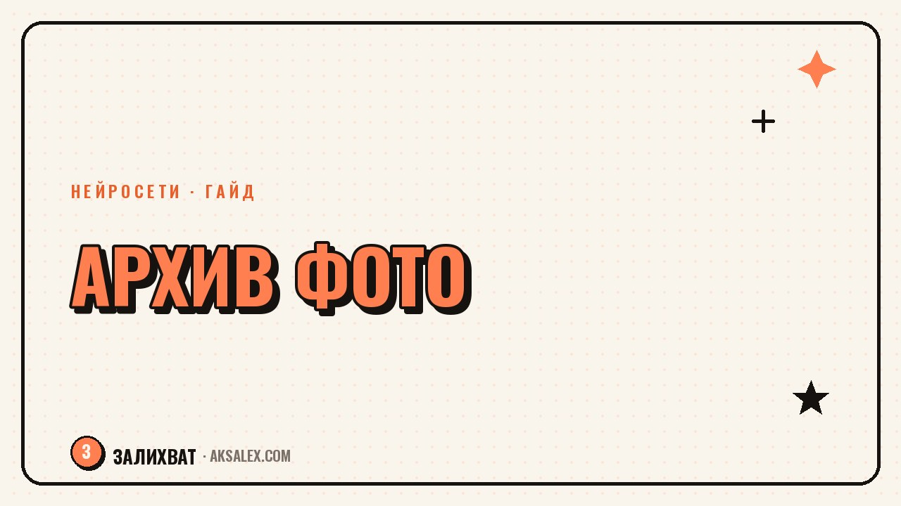

Нейросети для домашних фото: разбор и реставрация архива

У большинства семей где-то лежит коробка со старыми фотографиями или папка на компьютере с десятью тысячами файлов без названий. Руки не доходят годами: страшно, что придётся сидеть над этим неделями. С нейросетями разбор архива занимает не недели, а вечера, и заодно можно вернуть к жизни снимки, которые казались безнадёжно испорченными - с царапинами, пятнами от воды, выцветшей краской или вовсе без цвета.
С чего начать разбор завала
Первая ошибка - пытаться отсортировать всё и сразу по годам, лицам и событиям вручную. На это уходит мотивация уже на второй коробке. Разумнее сначала оцифровать физические снимки, а цифровой хаос - разложить по датам съёмки, которые уже встроены в файл.
Оцифровка бумажных фото
Для бумажных фотографий не нужен сканер - хватает телефона и приложения типа Google Фото Scan или встроенного сканера документов в заметках iPhone. Они убирают блики и выравнивают геометрию кадра автоматически. Если снимков несколько сотен, разумнее один раз отнести коробку в фотолабораторию на профессиональную оцифровку - это быстрее и качество выше, особенно для фото с глянцевой поверхностью.
Сортировка цифрового архива
Для цифровой свалки помогают нейросетевые функции в Google Фото и в приложении Apple «Фото»: они сами группируют снимки по лицам и местам съёмки. Это не 100% точность, но черновую сортировку по людям и годам они делают за минуты, а не за недели ручного перебора.
Реставрация старых снимков
Со временем фотографии желтеют, покрываются пятнами и царапинами, а бумага иногда расслаивается. Нейросети умеют убирать заломы и трещины, восстанавливать резкость на расфокусированных лицах и даже достраивать утраченные фрагменты кадра, если повреждение небольшое.
- Remini - заточен на лица, хорошо убирает размытость и зерно на портретах
- Фотошоп (Photoshop) с Neural Filters - ручной контроль, подходит для сложных реставраций
- GFPGAN (бесплатный, через онлайн-демо) - восстановление лиц на сильно повреждённых снимках
- Palette.fm - специализируется на раскраске и цветокоррекции
- MyHeritage Photo Enhancer - простой интерфейс, заточен именно под семейные архивы
Старое фото бабушки с отломанным уголком и трещиной через всё лицо я восстановила за пятнадцать минут - раньше для этого искали бы реставратора и ждали неделю, - рассказывает одна из читательниц блога.
Важно: не стоит ждать идеального результата на первой попытке. Сильно повреждённые снимки иногда требуют комбинации из двух-трёх сервисов - один убирает царапины, другой подчёркивает резкость лица, третий финально выравнивает цвет.
Раскраска чёрно-белых фотографий
Раскраска - отдельная история, и здесь нейросети особенно сильны, потому что обучены на миллионах цветных фотографий той же эпохи. Они понимают, какого цвета обычно была одежда, кожа, небо, и раскрашивают снимок правдоподобно, а не произвольными оттенками.
У большинства сервисов раскраска занимает секунды, но итог стоит проверять вручную: иногда волосы получают неестественный рыжий оттенок, а трава - слишком кислотный зелёный. Почти всегда можно подкорректировать тон после автоматической обработки прямо в том же приложении или в любом фоторедакторе.
Чего не стоит ждать от раскраски
Нейросеть не знает, что у прадеда был зелёный пиджак, а не синий - она угадывает по контексту кадра. Для снимков с исторически значимыми деталями (мундиры, флаги, форма) результат стоит сверять с семейной памятью или старыми записями, а не принимать на веру.
Сравнение сервисов для архива
| Сервис | Задача | Цена | Особенность |
|---|---|---|---|
| Remini | Улучшение лиц, убирание размытости | Бесплатно с подпиской от 300 руб/мес | Быстрый результат на телефоне |
| MyHeritage Photo Enhancer | Реставрация + раскраска | Бесплатные попытки, далее подписка | Удобно для семейных альбомов |
| Palette.fm | Раскраска чёрно-белых фото | Бесплатно с ограничением разрешения | Тонкая настройка палитры |
| Google Фото Scan | Оцифровка бумажных фото | Бесплатно | Убирает блики при съёмке телефоном |
| Photoshop Neural Filters | Ручная реставрация сложных случаев | Входит в подписку Adobe | Максимальный контроль над результатом |
Как собрать архив после обработки
После того как снимки оцифрованы и восстановлены, важно не оставить их в папке «Загрузки» на телефоне, где они снова потеряются. Стоит один раз завести структуру: папки по десятилетиям или по членам семьи, и сразу переносить туда готовые файлы.
- Храни оригиналы отдельно от обработанных версий - реставрация иногда теряет детали, и к оригиналу может захочется вернуться
- Делай резервную копию в двух местах - на облаке и на внешнем диске
- Подписывай снимки хотя бы годом и событием, пока помнишь - через десять лет вспомнить будет сложнее
- Для совместного доступа всей семье заведи общий альбом в Google Фото или iCloud
Отдельный плюс цифрового архива - его легко превратить в подарок: фотокнигу, слайд-шоу с музыкой или видео к юбилею. Многие сервисы для фотокниг уже умеют автоматически собирать макет из загруженных снимков, так что сам процесс сборки подарка тоже ускоряется.
Частые вопросы
Можно ли восстановить полностью уничтоженное фото?
Если на снимке не осталось различимых деталей - лица, контуров, структуры - нейросеть не восстановит то, чего физически нет, она лишь достроит правдоподобную картинку. Для фото с частичными повреждениями результат обычно хороший.
Сколько стоит обработать большой архив, например 500 фото?
Многие сервисы дают бесплатные попытки на пробу, а дальше подписка обычно стоит 300-600 рублей в месяц. Для разового большого архива выгоднее взять месячную подписку, обработать всё и отменить её.
Безопасно ли загружать семейные фото в онлайн-сервисы?
Стоит читать политику конфиденциальности конкретного сервиса и избегать загрузки документов с личными данными крупным планом. Для особо личных снимков лучше выбирать десктопные программы, которые обрабатывают фото локально, без отправки на сервер.
Нужен ли сканер для оцифровки старых фото?
Нет, современные приложения для съёмки документов на телефоне убирают блики и выравнивают перспективу достаточно хорошо для большинства домашних архивов. Сканер имеет смысл только для фото высокой художественной ценности.
Как раскрасить фото, если не уверен в исходных цветах?
Нейросеть предложит правдоподобный, но не гарантированно точный вариант. Если цвет важен исторически, сверься с воспоминаниями родственников или документами, а затем подправь оттенок вручную в редакторе.
Раз тема оказалась полезной, вот что почитать следующим. Пошаговый план, как взрослому человеку начать пользоваться нейросетями без паники и лишней сложности.
Читать статью →а не вручную